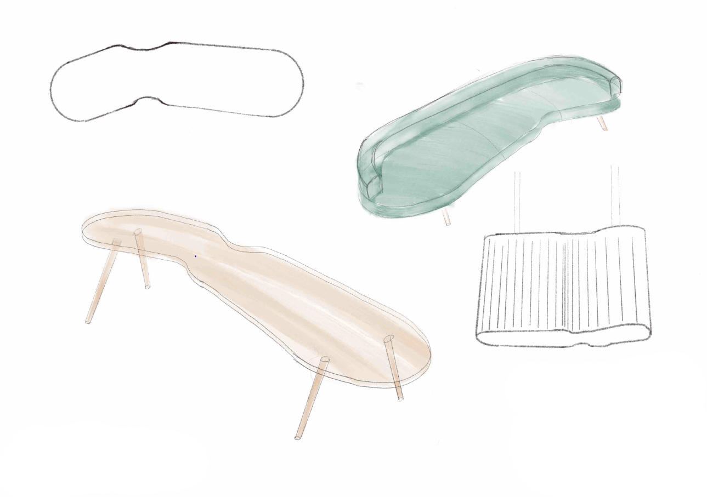

Matka Divan - A handcrafted scale model inspired by Harri Koskinen's Muotka vase.
The task was to take a Finnish design icon and, inspired by it, create something new.
The final outcome was to be a handcrafted scale model. Digital tools such as 3D printers and laser cutters were prohibited this time, adding an interesting challenge to the project.
I chose Harri Koskinen's Muotka vase as my inspiration, transferring its unique form to the frame of a divan sofa.

